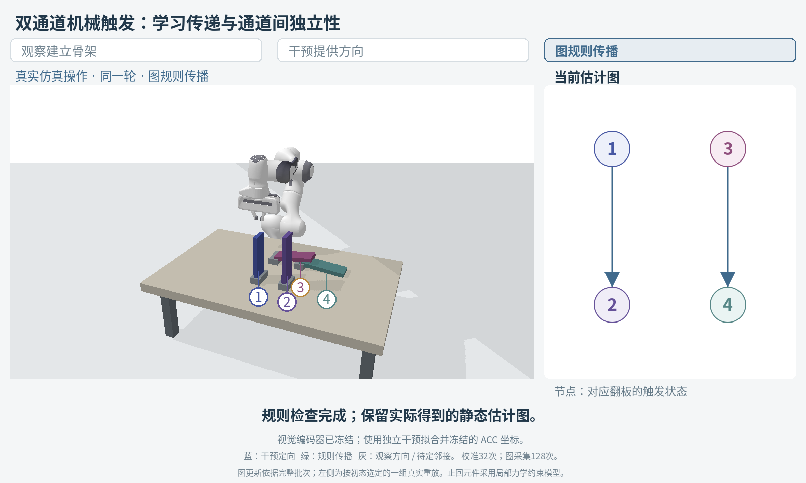
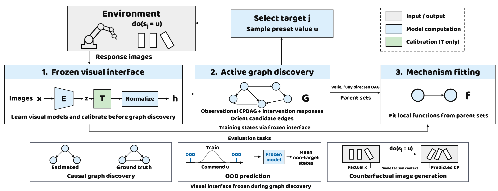

Visual causal representations
CausalVAE, the CITRIS family, and ILCM are discussed in the paper as routes to visual causal variables and latent queries.
Research project · Learning from interventions
Learning Causal Structure from Pixels
Make pixel-derived variables queryable in real intervention units. Calibrate visual readouts against verified values, choose experiments to resolve causal directions, then predict state and image consequences.

01 · Introduction
An encoder can recognize a domino's state while its numerical readout still differs from the value used to intervene in the environment. Setting that readout directly can answer the wrong query—even when the graph's directions are correct.
There are two distinct questions: which variables influence which others? And what model setting corresponds to a verified environment value? Intervention responses inform the first; calibration addresses the second.
03 · Problem formulation
Images, state labels that anchor node identities, eligible intervention targets, and feasible values. The operation interface verifies the direct target's attained value.
A node-preserving calibration map, the unknown direct causal structure, and local functions describing how parent states influence each node.
Graph accuracy, non-target state consequences, and images for alternative operations. All fitted modules remain frozen at test time.
Notation: image x, initial readout z = E(x), invertible calibration T, learned graph Ĝ, and target/value (j, u). The node meanings are anchored; direct parent sets and mechanisms must be learned. Calibration and graph acquisition both count toward the intervention budget.
Node meanings come from permitted state supervision; parent sets are not supplied. Intervention feedback provides the response image and verified target value, not a full ground-truth state vector. If one frame cannot reveal a declared variable, the protocol must provide additional observations with equal access for compared methods.
04 · Method
Calibration, graph learning, and mechanism fitting use the same readout coordinates. Predictions return to the original decoder through the inverse calibration.

Train a node-aligned encoder and decoder, then freeze them. Fixed round-robin interventions supply verified target values to fit an invertible, dimension-wise map T. It corrects scale, offset, and nonlinear readout discrepancies without changing node identities.
Freeze T. Conditional-independence tests propose an observational skeleton and partial directions. Choose an eligible target with many unresolved adjacent edges, collect responses, check proposed orientations, and propagate consistent graph rules. Insufficient evidence leaves directions unresolved.
Fit local functions from estimated parent sets on a valid, sufficiently oriented graph. Set the target in the shared coordinates and propagate to other nodes. To generate an image, undo normalization and apply T−1 before the frozen decoder.
Population consequence prediction
Input: a target and value (j, u), without a factual image. Resample fitted roots and residuals, propagate through the graph, and average non-target states. Excluding the operated node avoids rewarding command copying.
Counterfactual image generation
Input: a factual image and alternative (j, u). Estimate the factual residuals, keep them fixed, set the target, and update descendants. Non-descendants retain their factual readouts; inverse calibration supports decoding.
T acts on image readouts, not on a command a second time. A verified value u is mapped directly through fixed training and observation normalizations to the target setting qj(u). Graph discovery and mechanisms use h(x) = (T(E(x)) − μc)/σc; the decoder receives original encoder coordinates.
Calibration acquisition is predetermined round-robin; graph-stage targeting is evidence-dependent. Total new intervention-record cost includes both stages: B = Bcal + Bgraph. Replay is not a new environment call. The method targets settled states, not frame-by-frame dynamics.
The contribution is this shared intervention-value interface for frozen, known-node visual models. Latent interventions and active causal discovery are established capabilities; the paper tests numerical alignment, graph acquisition, and decoding separately.
5.1 · Experimental setup
The paper reports eight benchmark columns. Graph, population-consequence, and image metrics answer different questions; reported results and additional scene demonstrations remain separate.
Do the estimated direct edges and directions agree with ground truth?
SHD ↓ · AUPRC ↑Does a frozen model predict the other nodes' mean settled states?
Non-target mean NMSE ↓Does changing the latent target generate the same-context intervention image?
RGB MSE ↓Predictions cover executed queries, excluding blocked ones. ID/amplitude-shift labels and test sets A/B are not interchangeable. Physical ILCM and given-graph ICM-VAE retain their reference-only labels where appropriate; completion counts are not exact-graph counts.
5.2 · Causal graph discovery
Values from the submitted paper, not from the extra scene demonstrations.
Graph results are compared using both edge error and ranking quality.
Paper tables and protocolsMachine-readable reported valuesNo measurements were added or rerun for this page.
CausalVAE and ILCM are published methods; ILCM itself learns from intervention pairs. Their results should not be explained by claiming they lack intervention data. Each system uses its own representation and query machinery. ICM-VAE is a given-graph generation reference, not a graph-discovery competitor.
Prediction and image summaries cover executed queries, excluding blocked ones; they are not end-to-end success rates or comparisons on a guaranteed common query population. Physical ILCM uses different permissions and budget and is excluded from unified image ranking. Reported ID/amplitude-shift columns and test-set A/B columns remain distinct; an A/B label alone does not establish an OOD axis.
In a controlled three-seed Domino study, matched amounts of additional observations leave six edges unoriented. Intervention responses recover the graph with 1,800 or 3,600 additional graph-stage records.
Both coverage-targeted and round-robin interventions succeed; coverage targeting does not save records over round-robin here. Calibration is shared across this comparison.
Paper §5.2Edges remain unoriented
True graph recovered in this controlled task
Graph learning in action
Recorded scene on the left. Learned structure on the right.
A recorded mechanical demonstration of the workflow, separate from the preceding paper benchmark comparisons.
1 = Entry A · 2 = Output A · 3 = Entry B · 4 = Output B
The video could not load. Download the replay.
Operate the two entries separately. The resulting evidence supports Entry A → Output A and Entry B → Output B.
Each graph update uses a complete paired batch, not one pictured contact.
Nodes are settled trigger states. The static graph summarizes one-shot operations; it does not model every frame of rigid-body dynamics.
5.3 · Intervention-value calibration and effects
Same-data calibration control · Paper Table 2 · 3 seeds
The controlled cohort shares factual contexts and commands. Ordinary joint updating achieves a lower mean readout error than nonlinear calibration, yet its mean non-target effect errors are higher. This motivates evaluating what changes under an intervention, rather than judging calibration by readout accuracy alone.
Compare two measures, on the same cohort.
Lower is better in each panel. Means ± SD across three seeds; error units ×10³. Joint updating has additional training permissions. These are reported paper measurements, not the new scene replay's scores.
| Configuration | Readout MSE | Effect NMSE ID | Effect NMSE Amplitude shift | RGB MSE ID | RGB MSE Amplitude shift |
|---|
Effect NMSE scores the predicted change from the factual non-target state in paired contexts; it is not the population mean-state error reported in Table 3. The first three rows share the frozen encoder, data, graph, and ID-refitted decoder; mechanisms are fitted in each configuration's coordinates. Ordinary joint updating additionally trains a readout head and decoder, so it is a different-permission reference—not evidence that invertibility alone causes the gain.
Calibration reduces mean effect errors versus no calibration in this cohort. Nonlinear calibration is not uniformly better than a fully fitted affine map: affine has lower ID effect and RGB errors; nonlinear has lower amplitude-shift effect error. A Gears control also shows that better readouts need not improve queries.
Additional scene · ID readout check
Same frozen encoder. Independent calibration data.
Calibration maps an existing node-aligned visual coordinate to the values used by the operation interface. The two scenes below also show why an improved readout is a measurement result—not a guarantee of better downstream performance.
ID validation · 128 images · single training seed
The two operated entry nodes improve in normalized readout MSE; the unoperated nodes stay unchanged. Binary accuracy is 100% both before and after calibration.
NMSE is squared error in training-standardized anchor coordinates. Lower is better. All 128 validation images are included.
The map is a node-preserving monotone correction, fitted from verified target values and RGB only. It does not discover unknown node identities or unmix entangled latent variables. Non-entry coordinates are unchanged. The fixed 0.5 trigger-state readout used for graph discovery was not chosen from query outcomes.
5.4 · Non-target state consequences
5.5 · Same-context image queries
Additional scene · Paired query inspector
Actual decoder outputs alongside simulation ground truth.
The prediction is produced by changing the latent target, propagating through the fitted mechanisms with the factual residual, and decoding in the original encoder coordinates.
Recorded operation = 0
Same context, operation = 1
Component control
Frozen encoder, T, graph, decoder
Mean |RGB error| · scale 0–0.25
These fixed first four contexts come from the existing graph-discovery replays. Mechanisms are fitted only to the observational RGB bank; paired outcomes are not predictor inputs. The comparator is a no-propagation component control, not a separately trained published baseline. All images use the decoder's native 128 × 128 resolution without enhancement.
The demonstration uses linear additive-noise mechanisms on binary trigger states. This is a paired endpoint-query demonstration, not exact counterfactual identification in a nonlinear binary SCM or an unseen-context generalization test. The displayed image errors are context-specific, not a SOTA comparison. A 0/1 operation change is not continuous-amplitude OOD.
06 · Conclusion
The report follows three connected questions: interventions inform structure; calibration aligns visual readouts with operation values; frozen mechanisms and decoding test the resulting queries. Benefits are conditional—affine advantages, unresolved graphs, and negative transfer remain part of the evidence.
Supplement · Complete demo library
Explore graph-learning traces, frozen-graph physical checks, Balance and Pick-and-Place operations, tool use, and basic environments. Each category retains its own evidence scope, separate from the paper's task tables and model predictions.
Return to the graph-learning videosMore recorded scenes
Graph traces, physical checks, tool use, and environment overviews.
The main report follows the paper's order; this library gathers supplementary material. Candidate graphs, actual operations, mechanical previews, and environment illustrations are labeled separately rather than presented as calibrated model results.
The question
Candidate graph · recorded evidence
Watch candidate initialization, observational tests, target selection, two recorded operations, and the resulting graph updates.
Task-level candidate graph, not certified full-DAG recovery or an ACC benchmark.
Contact checks apply to finite recorded trajectories, not every possible physical state. Original videos have Chinese annotations; the page's questions and stage explanations are bilingual. Paired simulator replays are not model predictions.
Reproducibility · Sources and boundaries
The chain and independent-channel videos replay recorded simulation states. Graph updates come from the discovery traces; the true graph is not supplied to the discovery routine. Video colors describe ambiguity, intervention-supported directions, and graph-rule propagation; they are separate from the method figure's module colors.
The formulation uses known node semantics and an acyclic graph with no omitted common causes. Reliable calibration, adjacency estimates, and intervention coverage are required. A single factual image need not identify all exogenous causes; these evaluations do not establish universal or individual counterfactual identifiability.
The visual encoder is trained with known-node anchors. Entry-node calibration uses independent intervention data. Trigger-state readout uses a fixed threshold; the encoder, calibration map, and readout stay frozen during discovery. Hinged paddles use an idealized local anti-return force law, not simulated latch-tooth contacts. No post-release pose reset is used.
The six-domino video is a graph-discovery illustration from a separate run without learned calibration. Its operation replay does not constitute a fitted state predictor or model-generated counterfactual image. The new scenes do not yet provide an independently held-out OOD evaluation or a published-baseline comparison.